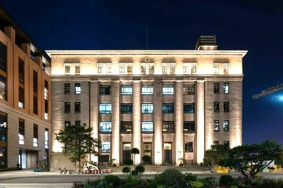
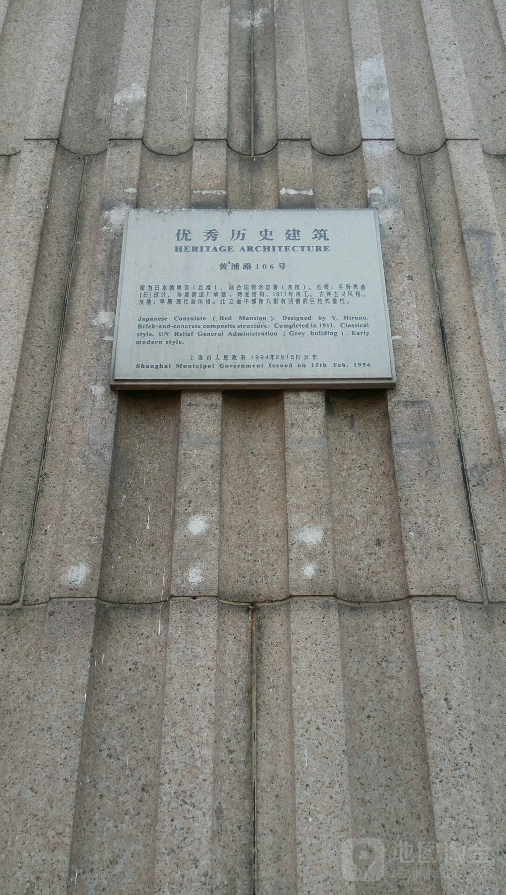

紧邻白渡桥，有一条黄浦路。这条不足半公里的小路，曾是我童年的乐园。
一出后弄堂就是黄浦路，我们几乎每天都要到这里报到。白天和小伙伴们一起在这里追逐嬉戏，玩强盗赛；夜晚在路边停泊的卡车上，爬上翻下，玩捉迷藏。夏天，在那些没有空调和电扇的日子里，为了逃避酷热，黄浦路上的那些运冰车成了我们追逐的对象，能够捡到一块稍大的碎冰，对我们来说就是巨大的幸运。
我记得，为了捉到那只心心念念的蟋蟀，我探访过黄浦路上的每一个角落，聆听了无数只蟋蟀的歌唱……
还记得，黄浦路的禽蛋二厂门前，运送禽蛋的箩筐堆成山，蛋黄、蛋清流淌，腐败了，发出难闻的味道。尽管竹刺尖锐，易被刺伤。我们还是兴奋地寻找完好的竹片，将它们精心制作成玩具刀剑，陪伴我们整个假期。
我们还喜欢在一幢被称为“联合国”的大楼前玩耍。它为什么得名“联合国”？大家都没有搞清。我们所关注的，是楼前那块平坦的场地，那里是我们跳绳、踢毽子、打三毛球的最佳场所。
玩累了，我们会停下脚步，抹去额头的汗珠，抬头仰望这幢大楼，铭牌上写着“黄浦路106号”。它正正方方的形状，让我联想起玩过的积木，显得格外坚固和稳定。巨大的柱子如同支撑天空的巨人腿，我们对这幢大楼充满了好奇和敬畏。
大楼日夜有门卫严守，就别指望进去了。然而，它背后蕴藏着怎样的风景呢？我和伙伴们在好奇心驱使下，屡次试图探索其背后的世界，却总是徒劳无功，这成了童年心中一个难解的谜团。
长大后才明白，这里曾是联合国救济总署的驻地，所以被人称为“联合国”。由于披着灰色的外套，还被称为灰楼。
时光荏苒，岁月流转。随着浦江两岸滨江地带的开发建设，上海“一江一河”贯通工程稳步推进。2020年，黄浦江与苏州河的故事迎来了新的篇章，断点被打通，连成了一线！
那座灰楼，恰好位于这个转折点上，如今，我们终于可以绕到它的后面，一探以前未能见到的风光了！
那天，童梦终于成真！我们来到了灰楼背后。这儿，不仅能眺望黄浦江的宽广，还能感受苏州河的温柔，真是个观赏景致的好地方！
看看浦江的这边，高楼林立，陆家嘴金融贸易区的高楼大厦熠熠生辉，散发出现代都市的璀璨光芒；转头望望那边，外滩的老建筑散发着历史韵味，静静地诉说着上海悠长的往事。这两岸的风景，就像一座时空隧道，把历史和现代紧密连接。
走到灰楼背后，一幕幕令人惊叹的景象展现眼前：东方明珠塔似乎是从科幻片中驶来的飞船，静静悬浮在云端之上，引人遐想。而金茂大厦、上海中心大厦则如同直冲云霄的巨人，展示着人类达到的新高度。
还有那优雅的上海大厦，其线条流畅，仿佛是这座城市的守护者，静静地俯瞰着这片繁华。与之相伴的外白渡桥，那份历史的厚重在这现代化大都市中显得更加珍贵，让人不由得沉醉。
苏州河边，却有着不一样的安静。河水慢慢流淌，两岸的树木为这繁忙的城市带来了一丝清凉。走在这里，你会看到上海不一样的一面，更加接地气、更有生活味。
小时候，总梦想探索灰楼背后的世界。如今，站在这里，眼前的一切让我激动不已，耳畔响起了一个声音：“看，我们终于来了！”
这片景致，给了我们一场视觉的盛宴，圆了儿时心里的小小的梦想。灰楼的背后，是一个如此绚烂多彩的世界。 灰楼，你见证了上海的变迁和繁华，你必将见证上海更加美好的未来！
（本文刊登于2024.6.11《上海老年报》）

灰 楼
